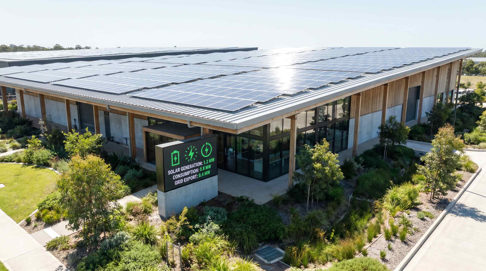

Energi er en af de største faste omkostninger på et lager. Belysning, opvarmning, køling og drift af materiel løber døgnet rundt. Med stigende elpriser og skrappere krav til CO2-rapportering er energioptimering ikke længere et nice-to-have, det er en konkurrenceparameter. Denne artikel gennemgår, hvad der typisk koster mest, og hvad du konkret kan gøre ved det.
Typisk energiforbrug på et dansk lager
Et uopvarmet lager i Danmark bruger typisk 30-60 kWh pr. m² om året til belysning og drift. Tilføjer du opvarmning stiger det til 80-150 kWh, og har du kølede zoner, temperaturkontrol eller automatiserede systemer kan det sætte sig på 100-250 kWh pr. m² om året.
For et standard lager på 2.000 m² svarer det til et årligt elforbrug på 160.000-300.000 kWh. Med en aktuel elpris på ca. 1,60-2,00 kr./kWh inkl. afgifter er det 256.000-600.000 kr. om året. Der er med andre ord meget at hente.
De typiske energiposter fordeler sig sådan:
Belysning: 25-40% af det samlede forbrug i et traditionelt lager. Lofthøjder på 8-12 meter kræver kraftig belysning for at opnå godkendt lysstyrke. Mange ældre lagre har stadig lystofsrrør eller HID-armaturer med højt forbrug.
Opvarmning og ventilation: 30-50% afhængigt af bygningens isoleringsgrad og klimazone. Et gammelt lager uden dampspærre eller isolering i ydermærene bruger markant mere end et moderne byggeri.
Gaffeltrucks og lagermateriel: 10-20% for lagre med eltrucks og automatiserede systemer. Dieseltrucks tilføjer scope 1-udledninger oven i elforbruget.
Kontorer og sociale rum: 5-15%, inklusive computere, køkken og sanitære anlæg.
👉 Vil du kortlægge dit lagers energiforbrug? Kontakt SmartPack
Sparetiltag og forventet effekt
LED-belysning med sensorstyring er det tiltag, der giver den korteste tilbagebetalingstid. Overgang fra lystofsrrør til LED med bevægelsessensor og dagslysstyring reducerer belysningsforbruget med 50-75%. For et lager, der bruger 80.000 kWh om året på lys, er det en besparelse på 40.000-60.000 kWh. Med en investering på 150.000-300.000 kr. er tilbagebetalingstiden 2-4 år.
Zonestyret opvarmning er relevant, når lageret ikke bruges ensartet. Zoner med lav aktivitet, f.eks. lavfrekvente hyldesektioner, behøver ikke holdes på samme temperatur som pluk- og pakkestationerne. Med zonedelt styring og nedsat temperatur i inaktive områder kan varmeforbruget reduceres med 15-25%.
Isolering og klimaskal: En grundig inspektion af loftrum, porte, vinduer og fundament kan identificere, hvor varmetabet er størst. Portisoléring er en hyppig kilde til varmetab, især når portene åbnes og lukkes mange gange dagligt. Hurtigløbende porte sænker varmetabet markant.
Solceller på tagfladen: Lagerhaller med store, flade tagareal er oplagte til solceller. Et 1.000 m² solcelleanllag på et lager producerer typisk 90.000-110.000 kWh om året. Med dagtidsforbrug, der matcher solproduktionen, er egenforbrugsandelen høj og tilbagebetalingstiden realistisk på 6-9 år.
El-gaffeltrucks: Skift fra dieseltrucks til el er både CO2- og driftsomkostningsreducerende. El er markant billigere pr. kørt kilometer end diesel, og vedligeholdelsesomkostningerne på el-trucks er lavere. Investering i ladeinfrastruktur er tilbagebetalingstiden typisk 3-6 år.
Energimåling og styring
Det første skridt i en energioptimering er at få granulerede målinger. En samlet el-regning siger ikke meget om, hvad der fylder. Installer sub-målere på de store forbrugsgrupper: lys, varme og gaffeltrucks. Dermed ved du præcis, hvad der koster hvad, og kan måle effekten af hvert tiltag.
Et Building Management System (BMS) kan automatisere styringen af lys, varme og ventilation baseret på sensor-input og kalender. Det kræver en investering, men for lagre over 3.000 m² er det typisk rentabelt inden for 3-5 år alene på energibesparelsen.
Typiske fejl
Den hyppigste fejl er at gennemføre isolerede tiltag uden et samlet billede. F.eks. at installere solceller før man har reduceret grundforbruget, så anllagget er undervurderet. Eller at skift til LED uden at løse dårlig klimaskal giver skuffende resultater på den samlede regning.
En anden fejl er at glemme adfaerd. Tekniske løsninger udnyttes bedst, når medarbejderne forstiller de både økonomiske og klimamæssige konsekvenser af energiadferd. Porte, der står åbne unødigt, lys der brænder i tomme zoner og trucks der lader med motoren kørende er alle eksempler, som teknologi alene ikke løser.
Hvad kan SmartPack gøre?
SmartPack's lagerstyring kan hjælpe med at kortlægge aktivitetsniveauet i forskellige lagerzoner, hvilket er udgangspunktet for at designe zonestyret opvarmning og belysning. Derudover giver ordredataen indblik i, hvornår på døgnet og ugen lageret er aktivt, så energistyringen kan tilpasses reelt brug snarere end faste tidsprogrammer.